Ctrl+V (서식 유지됨)제목
본문 (이 영역 전체가 복사됩니다)
📷 여기에 이미지 넣기 — 썸네일 — thumb-daejin.png (대표 이미지로 지정)
대진대 윈윈대진전형에서 먼저 챙길 것은 날짜입니다. 1단계 합격자 발표가 11월 3일(화) 14:00이고 면접이 11월 7일(토)~8일(일)이라, 발표 뒤 면접까지 나흘입니다(이 글에서 계산한 값). 수능(11월 19일)보다 면접이 먼저 옵니다. 2단계는 1단계 성적 70%와 면접 30%를 합산하고, 면접은 10분 내외 블라인드 면접입니다. 대학은 면접 공통질문 "우리학과에 지원한 동기가 무엇인가요?"를 모집요강에 미리 밝혔고, 그 밖의 질문은 학교생활기록부 내용을 바탕으로 한다고 적었습니다. 이 글은 2027학년도 수시모집요강으로 전형 방법, 일정, 면접 방식, 질문 7개 답변법, 준비 순서를 정리했습니다. 면접이 있는 교과 전형(학생부우수자·종단추천자)의 공개 문항 5개는 뒤에 한 구역으로 묶었습니다. 윈윈대진전형 지원자와 대진대 교과 전형 지원자가 읽으시면 됩니다.
1. 윈윈대진전형, 2027학년도에는 어떻게 보나
학생부종합 윈윈대진전형은 310명을 뽑습니다. 인원이 많은 모집단위는 간호학과 36명, 의생명과학과·컴퓨터공학전공 각 15명, 글로벌경제학과·경영학과·공공인재법학과·행정정보학과·미디어커뮤니케이션학과·스마트모빌리티전공·AI빅데이터전공 각 12명입니다. 수능최저학력기준은 없습니다(30쪽).
📷 여기에 이미지 넣기 — 캡처 1 — 대진대학교 2027학년도 수시모집요강 30쪽: daejin-2027-winwin-units.png
1단계는 서류평가 100%(1,000점)로 3배수를 뽑고, 2단계는 1단계 성적 70%(700점)와 면접 30%(300점)를 합산합니다. 1단계 동점자는 전원 합격 처리하고, 2단계 동점자는 면접고사 성적 상위자를 뽑습니다. 면접고사 결시자·부정행위자는 불합격 처리합니다(31쪽). 학교폭력 조치사항은 최종 총점 기준 비율로 감점하며 1호 1%, 2호 2%, 3호 3%, 4·5호 5%, 6·7호 10%이고 8·9호는 부적격(불합격)입니다(8쪽).
📷 여기에 이미지 넣기 — 캡처 2 — 대진대학교 2027학년도 수시모집요강 31쪽: daejin-2027-winwin-method.png
서류평가는 입학사정관이 참여해 학생부(교과/비교과)를 종합적으로 평가하고, 학업역량 40%, 진로역량 30%, 공동체역량 30%를 반영합니다(49쪽).
📷 여기에 이미지 넣기 — 캡처 3 — 대진대학교 2027학년도 수시모집요강 49쪽: daejin-2027-winwin-docs.png
2. 언제 보나: 11월 3일 발표, 11월 7일~8일 면접
- 2026년 9월 7일(월)~11일(금): 원서접수
- 11월 3일(화) 14:00: 1단계 합격자 발표, 입학 홈페이지(개별 통보 없음)
- 11월 7일(토)~8일(일): 면접, 지원인원에 따라 분반
- 11월 13일(금) 14:00: 합격자 발표(개별 통보 없음)
면접 일시와 장소는 11월 3일(화) 14:00 입학 홈페이지에서 확인합니다. 고사 당일에는 수험표와 신분증(주민등록증, 운전면허증, 청소년증 중 1개)을 반드시 지참해야 합니다(12·30쪽).
📷 여기에 이미지 넣기 — 캡처 4 — 대진대학교 2027학년도 수시모집요강 30쪽: daejin-2027-winwin-schedule.png
3. 면접은 어떻게 보나
면접은 2인 이상의 면접위원이 수험생 개인별로 10분 내외의 블라인드 면접으로 진행합니다. 평가항목은 학업역량 30%(90점), 진로역량 30%(90점), 공동체역량 40%(120점)이고, 항목별로 A~H 8단계로 평가합니다. 공통질문은 "우리학과에 지원한 동기가 무엇인가요?"이고, 공통 질문 외의 질문은 학교생활기록부 내용을 바탕으로 합니다(52쪽).
📷 여기에 이미지 넣기 — 캡처 5 — 대진대학교 2027학년도 수시모집요강 52쪽: daejin-2027-winwin-interview.png
블라인드 규정도 분명합니다. 학생의 출신고교를 알 수 있는 교복 및 액세서리 등의 착용을 일절 금지하고, 단정한 복장으로 면접에 참여하라고 안내합니다. 대기실에서 가(假)번호와 스티커를 받고, 면접장에서 성명·수험번호·출신고교명·가족관계·출신지역·부모직업·사교육요소 등을 언급하면 불이익이 있을 수 있습니다. 고의적·반복적 위반자는 감점 또는 0점 처리합니다(50쪽).
📷 여기에 이미지 넣기 — 캡처 6 — 대진대학교 2027학년도 수시모집요강 50쪽: daejin-2027-blind.png
4. 공통질문과 예상 질문 6개, 답변법
질문 1은 대학이 공개한 공통질문입니다. 질문 2~7은 평가항목(학업역량, 진로역량, 공동체역량)과 "학교생활기록부 내용을 바탕으로"라는 안내로 정리한 예상 질문이며 대학이 공개한 질문이 아닙니다. 공동체역량 배점이 120점으로 가장 커서 공동체역량 질문을 두 개 넣었습니다. 예시 답변은 모집단위를 바꿔 쓴 가상의 예시이니 본인 경험으로 바꾸세요.
▶ 질문 1. 우리학과에 지원한 동기가 무엇인가요? (대학 공개 공통질문, 52쪽)
왜 묻나: 모든 지원자가 받는 공통질문입니다. 미리 알려 준 질문이니 60초 안에 끝나는 답을 가장 먼저 완성하세요.
답변 구조: 동기 한 문장 → 그 마음을 확인한 학생부 장면 → 그때 바꾼 것과 배운 점 → 학과에서 배울 것.
답변 예시 (간호학과):
"간호학과에 지원한 동기는 아픈 사람의 작은 변화를 가장 가까이에서 살피는 일이 간호라는 것을 봉사활동에서 느꼈기 때문입니다. 2학년 때 요양원 봉사에서 식사 돕기를 맡았는데, 한 어르신이 매번 음식을 절반 넘게 남기셨습니다. 선생님께 여쭤 보니 삼키기가 힘드셔서였고, 선생님 안내대로 한 숟가락 양을 줄여 천천히 드리자 남기는 양이 줄었습니다. 도움도 먼저 관찰해야 제대로 된다는 것을 배웠습니다. 간호학과에서 환자를 관찰하고 기록하는 법을 제대로 배워, 작은 변화도 놓치지 않는 간호사가 되고 싶습니다."
주의: "어릴 때부터", "전망이 좋아서"로 끝내지 마세요. 학년, 활동, 장면 하나를 넣습니다.
▶ 질문 2. 학생부에 적힌 과목 중 가장 깊이 공부한 내용을 설명해 보세요. (학업역량)
왜 묻나: 평가항목 '학업역량'과 연결한 예상 질문입니다. 수업에서 생긴 궁금증과 더 찾아본 과정을 말할 수 있어야 합니다.
답변 구조: 과목과 주제 → 수업에서 생긴 궁금증 → 더 찾아본 방법 → 알게 된 것.
답변 예시 (의생명과학과):
"생명과학Ⅰ에서 배운 항원·항체 반응을 가장 깊이 공부했습니다. 수업에서 백신을 맞으면 기억 세포가 생긴다고 배웠는데, 왜 어떤 백신은 해마다 다시 맞아야 하는지 궁금했습니다. 교과서 뒤 참고 자료와 학교 도서관 책을 찾아보니 바이러스 표면 단백질이 자주 바뀌기 때문이었습니다. 배운 개념에 '왜'를 하나 더 붙이면 공부가 이어진다는 것을 알았습니다."
주의: 교과서 설명을 길게 하지 말고, 내가 궁금했던 것과 해 본 일에 시간을 쓰세요.
▶ 질문 3. 학생부의 ○○ 활동에서 본인이 직접 한 일은 무엇인가요? (학생부 기반, 진로역량)
왜 묻나: 공통질문 외의 질문은 학생부 내용을 바탕으로 한다고 했으니, 적힌 활동을 짚어 묻는 형태를 예상할 수 있습니다. 평가항목 '진로역량'과도 이어집니다.
답변 구조: 활동 주제 → 내가 맡은 일 → 막힌 점과 해결 → 결과 → 진로에 준 영향.
답변 예시 (컴퓨터공학전공):
"정보 시간 모둠 과제로 급식 잔반을 줄이는 방법을 찾았고, 저는 설문 결과를 표로 정리하는 프로그램을 맡았습니다. 처음에는 응답을 손으로 옮겨 적다가 실수가 잦아, 응답 파일을 읽어 메뉴별 남긴 양을 자동으로 세는 코드를 짰습니다. 그 결과 남기는 양이 많은 메뉴 세 가지를 찾아 영양 선생님께 전달했습니다. 불편한 일을 코드로 줄이는 경험이 진로를 정하는 계기가 됐습니다."
주의: "저희 모둠은"으로 시작하면 내 역할이 흐려집니다. "저는 ○○을 맡았습니다"로 시작하세요.
📷 여기에 이미지 넣기 — 이미지 1 — 제미나이 생성: 늦가을 캠퍼스 라운지에서 청진기·현미경·노트북·그림책·작은 카메라 옆에서 답하는 학생(실사) / "제미나이 프롬프트 1" · gem-daejin-1.png
(AI로 만든 이미지로, 실제 캠퍼스와 다를 수 있습니다)
▶ 질문 4. 모둠이나 학급에서 의견이 갈렸을 때 어떻게 했나요? (공동체역량)
왜 묻나: 배점이 가장 큰 평가항목 '공동체역량'과 연결한 예상 질문입니다. 의견을 어떻게 모았고 결과가 어땠는지를 말해야 합니다.
답변 구조: 상황과 갈린 의견 → 내가 한 일 → 정한 방법과 결과 → 그 뒤 바뀐 습관.
답변 예시 (사회복지학과):
"학급 봉사 계획을 세울 때 '연탄 나르기'와 '복지관 말벗'으로 의견이 반반 갈렸습니다. 저는 두 쪽에 이유를 한 줄씩 적어 달라고 했고, 연탄 쪽은 몸으로 돕고 싶다는 마음, 말벗 쪽은 꾸준히 만나고 싶다는 마음이라는 것을 알았습니다. 그래서 한 학기는 말벗을 정기적으로 하고 겨울에 한 번 연탄 봉사를 더하자고 제안했고, 모두 동의했습니다. 결론보다 이유를 먼저 듣는 습관이 생겼습니다."
주의: 내가 이긴 이야기가 아니라, 다른 의견을 어떻게 받아들였는지를 넣으세요.
▶ 질문 5. 맡은 일을 끝까지 해내기 어려웠던 경험이 있나요? (공동체역량)
왜 묻나: '공동체역량'과 연결한 두 번째 예상 질문입니다. 힘들었던 순간과 그 뒤 내가 한 행동을 구체적으로 말해야 합니다.
답변 구조: 맡은 일 → 어려웠던 점 → 내가 바꾼 행동 → 결과 → 배운 점.
답변 예시 (행정정보학과):
"2학년 때 학급 회계를 맡았는데, 학급비를 내지 않은 친구가 많아 체육대회 간식을 살 수 없을 뻔했습니다. 처음에는 단톡방에 공지만 했지만 효과가 없어서, 낸 사람과 남은 금액을 날마다 칠판 구석에 적고 쉬는 시간에 한 명씩 직접 말했습니다. 마감 이틀 전에 모두 모였고, 쓴 내역을 영수증과 함께 공개했습니다. 공공의 돈은 투명하게 보여 줄 때 신뢰가 생긴다는 것을 배웠습니다."
주의: 결과가 좋지 않았던 경험도 괜찮습니다. 그 뒤 바꾼 행동을 말하세요.
▶ 질문 6. 성적이 잘 나오지 않았던 과목을 어떻게 공부했나요? (학업역량)
왜 묻나: '학업역량'과 연결한 예상 질문입니다. 학생부에 성적 변화가 보이면 그 과정을 설명할 수 있어야 합니다.
답변 구조: 어려웠던 과목과 이유 → 바꾼 공부 방법 → 결과 → 지금도 쓰는 방법.
답변 예시 (아동학과):
"1학년 수학에서 서술형 문제를 거의 비워 냈습니다. 답은 구해도 과정을 글로 쓰지 못했기 때문입니다. 그래서 풀이를 동생에게 설명하듯 소리 내어 말한 뒤 그대로 적는 연습을 했고, 2학년부터 서술형 점수가 올랐습니다. 상대가 이해하도록 차근차근 설명하는 연습은 아이들과 이야기할 때도 필요한 일이라, 아동학과에서도 이 습관을 이어 가겠습니다."
주의: 남 탓으로 돌리지 말고, 내가 바꾼 방법을 중심에 두세요.
▶ 질문 7. 입학하면 무엇을 공부하고 싶나요? (진로역량)
왜 묻나: '진로역량'과 연결한 예상 질문입니다. 학생부의 관심이 대학 공부로 어떻게 이어지는지를 말합니다.
답변 구조: 공부하고 싶은 분야 한 문장 → 관심이 생긴 학생부 장면 → 입학 후 해 볼 일 두 가지 → 기대하는 모습.
답변 예시 (미디어커뮤니케이션학과):
"같은 정보도 어떻게 보여 주느냐에 따라 받아들이는 사람이 달라지는 과정을 공부하고 싶습니다. 방송반에서 학교 소식 영상을 만들었는데, 3분짜리를 1분으로 줄이고 자막을 크게 바꾸자 끝까지 본 친구가 눈에 띄게 늘었습니다. 입학하면 영상 제작 수업과 미디어 이용자를 조사하는 수업을 함께 들어 보고 싶습니다. 사람들이 꼭 알아야 할 정보를 끝까지 보게 만드는 사람이 되고 싶습니다."
주의: 대진대 교육과정을 말하려면 학과 홈페이지에서 확인한 것만 말하세요.
5. 답변은 이 4단계로 만드세요
어떤 질문이든 결론 → 경험 → 배운 점 → 연결 순서로 40~60초 안에 말하세요. 면접이 10분 내외이니 답 하나가 1분을 넘지 않게 연습합니다. 아래 도식은 질문 1을 4단계로 쪼갠 것입니다.
📷 여기에 이미지 넣기 — 도식 — structure-daejin.png
6. 10월 31일(토)부터 면접 당일까지 준비 순서
10월 31일(토) ~ 11월 2일(월): 학생부를 처음부터 읽고 수업 장면 두 개, 활동 세 개를 골라 "왜 시작했나, 내가 한 일, 막힌 점, 다음에 한 일"을 한 줄씩 적습니다. 질문 1의 답을 먼저 완성합니다.
11월 3일(화) 14:00, 1단계 발표: 입학 홈페이지에서 결과와 면접 일시·장소를 직접 확인합니다. 개별 통보는 없습니다(30쪽).
11월 4일(수) ~ 5일(목): 질문 3·4·5처럼 학생부를 짚는 질문을 다른 활동으로도 답해 봅니다. 10분을 재며 모의 면접을 녹음하고, 60초를 넘는 답과 학교 이름·부모 직업이 나오는 곳을 표시합니다.
11월 6일(금): 표시한 답을 줄이고 수험표를 출력합니다. 가는 길을 확인합니다. 새 답변은 만들지 않습니다.
11월 7일(토) ~ 8일(일), 면접: 수험표와 신분증을 챙기고 일찍 도착합니다. 교복은 입지 않습니다.
11월 13일(금) 14:00: 합격자 발표(12쪽). 그 뒤 11월 19일(목) 수능입니다.
7. 대진대 윈윈대진 면접 자주 묻는 것들
Q. 윈윈대진과 교과 전형에 모두 지원했다면 면접을 두 번 보나요?
A. 모집요강에는 "본교 대학별 고사가 중복되지 않는 경우 다른 전형에 중복 지원 가능"이라고만 적혀 있습니다(31쪽). 면접일은 윈윈대진 11월 7일~8일, 학생부우수자·종단추천자 11월 21일(토)입니다(12쪽). 두 면접은 방식이 다르니 따로 준비하세요.
Q. 면접 날짜와 시간은 어떻게 정해지나요?
A. 지원인원에 따라 분반을 나누어 실시하고, 일시와 장소는 11월 3일(화) 14:00 입학 홈페이지에서 확인합니다(30쪽). 면접일 변경 절차는 모집요강에 적혀 있지 않습니다.
Q. 제시문을 읽고 푸는 문제가 나오나요?
A. 윈윈대진은 공통질문과 학교생활기록부 내용을 바탕으로 한 질문이고, 제시문 안내는 없습니다(52쪽). 교과 전형은 계열별 공개 문항 3개 중 추첨으로 1문항이 나옵니다(51쪽).
Q. 면접 복장은 어떻게 하나요?
A. 출신고교를 알 수 있는 교복 및 액세서리 등의 착용을 일절 금지하고, 단정한 복장으로 참여하라고 안내합니다(50쪽).
Q. 수능 최저가 있나요?
A. 없습니다(30쪽). 대신 면접에 결시하면 불합격입니다(31쪽).
8. 교과 전형(학생부우수자·종단추천자)은 공개 문항이 나옵니다
학생부우수자전형은 250명, 종단추천자전형은 대순종학과 14명을 뽑고, 두 전형 모두 교과 70%(700점)와 면접 30%(300점)를 일괄 합산하며 수능 최저가 없습니다(16~18쪽). 종단추천자는 종단 대순진리회 각 방면 수임선감(책임자)의 추천을 받은 사람이 지원합니다(18쪽). 면접은 2인의 면접위원이 개인별 5분 내외로 보는 블라인드 면접이고, 논리적 사고력 및 창의능력 50%(150점), 전공적성 능력 35%(105점), 인성(태도 및 가치관 포함) 15%(45점)입니다(51쪽).
논리적 사고력 문항은 계열별로 공개한 3문항 중 추첨으로 1문항이 나옵니다(51쪽).
- 공통(인문사회·자연공학·자율전공학부): "자율주행차, 의료 AI 등 기술 발전으로 인해 알고리즘이 생사와 관련된 결정을 내리는 상황이 현실화되고 있습니다. 이러한 윤리적 판단을 인간이 아닌 AI에게 맡길 수 있는지에 대해 찬반 양 측의 입장을 고려하여 본인의 견해를 설명하시오."
- 인문사회·자율전공학부: "최근 '워라밸(Work-Life Balance)' 중시 문화가 확산되면서, 주 4일 근무제 도입을 지지하는 주장과 기업 경쟁력 약화 및 생산성 저하를 우려하는 반론이 공존하고 있습니다. 주 4일 근무제가 우리 사회에 미칠 영향을 긍정적·부정적 측면에서 분석하고, 본인의 견해를 설명하시오."
- 인문사회: "최근 전쟁과 국제 갈등으로 인해 석유와 가스 가격이 크게 오르면서 전기요금과 물가도 함께 상승하고 있습니다. 이런 상황이 계속되면 국민들의 생활 부담이 커지고 기업 활동에도 어려움이 생길 수 있습니다. 이러한 문제를 해결하기 위해 정부가 가장 먼저 해야 할 일은 무엇이라고 생각하는지 본인의 견해를 설명하시오."
- 자연공학·자율전공학부: "최근 태양광·풍력 등 신재생에너지 비중이 빠르게 증가하고 있지만, 전력의 안정적 공급에는 한계가 있다는 지적도 있습니다. 이러한 한계의 원인과 이를 극복하기 위한 기술적 해결방안을 설명해 보세요."
- 자연공학: "현실 세계를 가상 공간에 똑같이 구현하는 '디지털 트윈(Digital Twin)' 기술이 도시, 공장, 의료 등 다양한 분야에 적용되고 있습니다. 디지털 트윈이 어떤 원리로 작동하며, 이 기술이 가져올 수 있는 사회적 변화 또는 한계를 설명해 보세요."
전공적성 능력은 지정문항 "우리학과에 지원한 동기가 무엇인가요?" 1개입니다(51쪽). 문항이 요구하는 말("찬반 양 측의 입장을 고려하여", "긍정적·부정적 측면에서", "원인과 … 해결방안")을 답의 순서로 삼고, 내 계열 3문항을 각각 1분 안에 말해 보세요.
📷 여기에 이미지 넣기 — 캡처 7 — 대진대학교 2027학년도 수시모집요강 51쪽: daejin-2027-gyogwa-questions.png
면접은 11월 21일(토)이고 지원인원에 따라 일부 학과는 11월 22일(일)에 보며, 일시와 장소는 11월 18일(수) 14:00 입학 홈페이지에서 확인합니다(12쪽). 16·18쪽 전형별 일정표에는 일부 학과 날짜가 "11.16.(일)"로 적혀 있는데, 2026년 11월 16일은 월요일이고 면접 안내 공지(11월 18일)보다 앞서 12쪽의 "11.22.(일)"과 맞지 않습니다. 입학팀(031-539-1234)에 미리 확인하세요. 합격자 발표는 12월 11일(금) 14:00입니다(12쪽).
📷 여기에 이미지 넣기 — 캡처 8 — 대진대학교 2027학년도 수시모집요강 12쪽: daejin-2027-schedule-all.png
9. 면접 전날 체크리스트
□ "우리학과에 지원한 동기"를 학생부 장면 하나와 함께 60초 안에 말할 수 있다
□ 가장 깊이 공부한 수업 내용과 더 찾아본 과정을 말할 수 있다
□ 학생부 활동 세 개를 "내가 한 일, 막힌 점, 다음에 한 일"로 말할 수 있다
□ 의견이 갈렸을 때와 맡은 일이 어려웠을 때 내가 한 일을 하나씩 말할 수 있다
□ 녹음으로 60초를 넘는 답, 학교 이름·부모 직업이 나오는 답을 고쳤다
□ 11월 3일 공지에서 내 면접 일시와 장소를 확인했다
□ 수험표와 신분증을 챙겼고, 교복은 입지 않는다
10. 같은 시기에 면접 보는 대학
대진대와 같이 지원했다면 이어서 보세요.
▷ 강남대 학교생활우수자전형2 면접 총정리 (11월 7일~8일)
▷ 차의과대 CHA학생부교과·CHA학생부종합 면접 총정리 (종합 11월 6일~8일)
11. 함께 보면 좋은 글
▷ 미디어커뮤니케이션학과 면접 질문 6가지와 답변 예시 총정리
윈윈대진 면접은 10분 내외에 지원 동기와 학생부에 적힌 수업·활동을 내 말로 설명하고, 그 경험이 지원한 학과로 어떻게 이어지는지 보여 주는 자리입니다.
※ 이 글의 내용은 대진대학교 2027학년도 수시모집요강에서 인용했습니다. 괄호 안 쪽수는 모집요강에 인쇄된 쪽수입니다. 질문 1과 교과 전형 문항 5개는 대학이 모집요강에 공개한 질문이고, 질문 2~7은 평가항목을 바탕으로 정리한 예상 질문으로 대학이 공개한 질문이 아닙니다. 면접 일시와 장소는 대진대 입학 홈페이지 공지를 꼭 확인하세요.
대진대를 포함한 76개 대학의 2027학년도 면접 정보와 71개 학과별 면접 질문·답변 예시, 대학이 공개한 실제 면접 기출을 무료로 정리한 사이트입니다. 회원가입 없이 바로 볼 수 있고, 질문을 무작위로 뽑아 60초 타이머로 연습하는 모의 면접도 있습니다.
태그 (#은 에디터가 자동으로 붙이므로 그대로 붙여 넣어도 됩니다)
넣을 이미지 목록 (docs/promo/img 폴더)
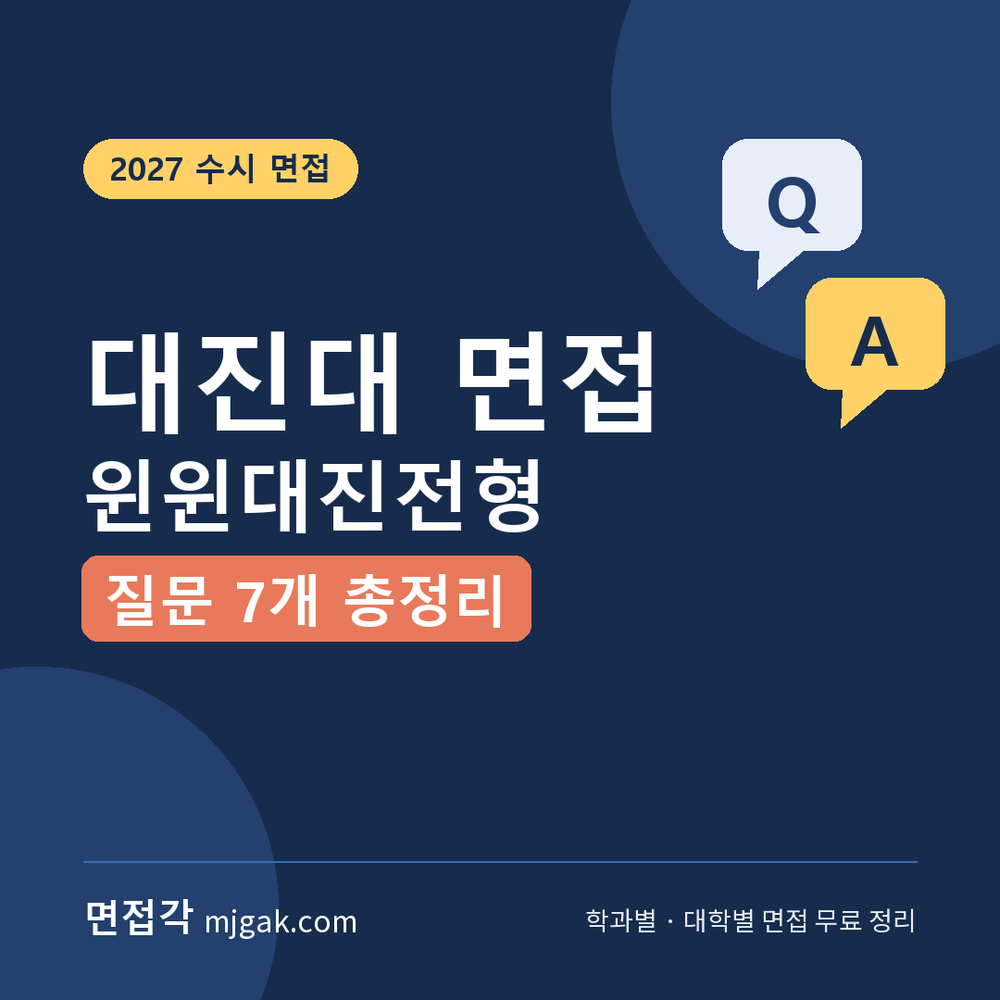
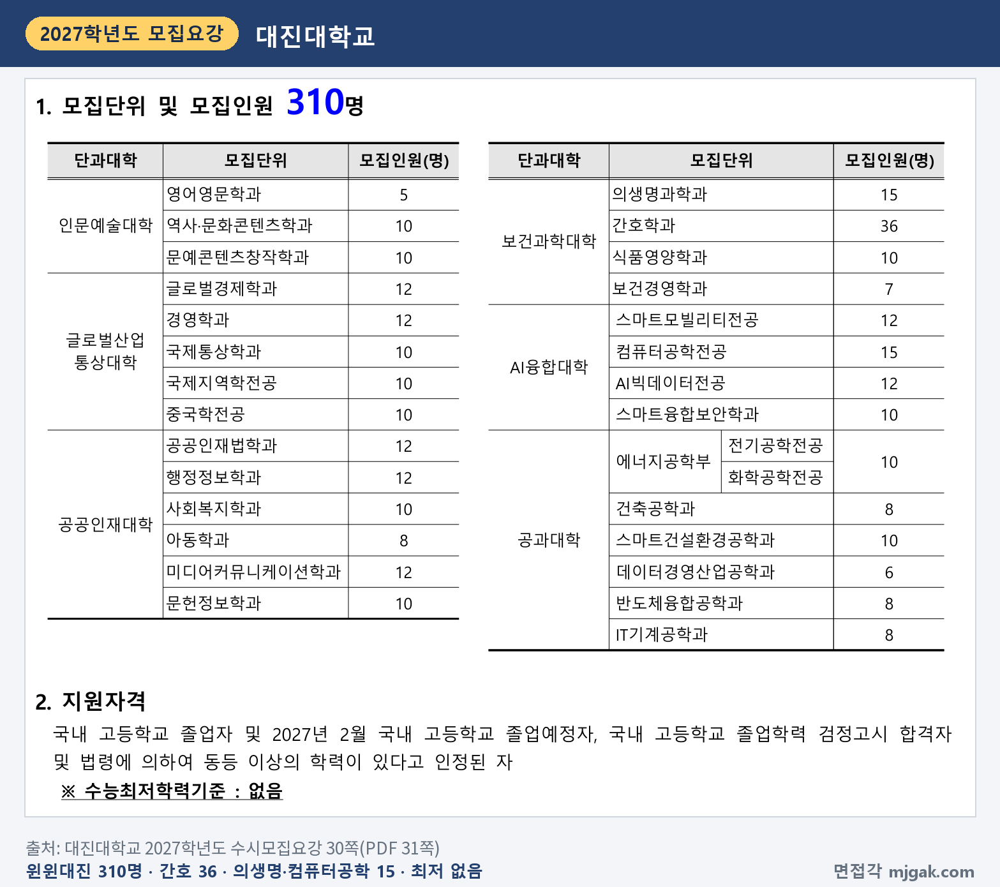
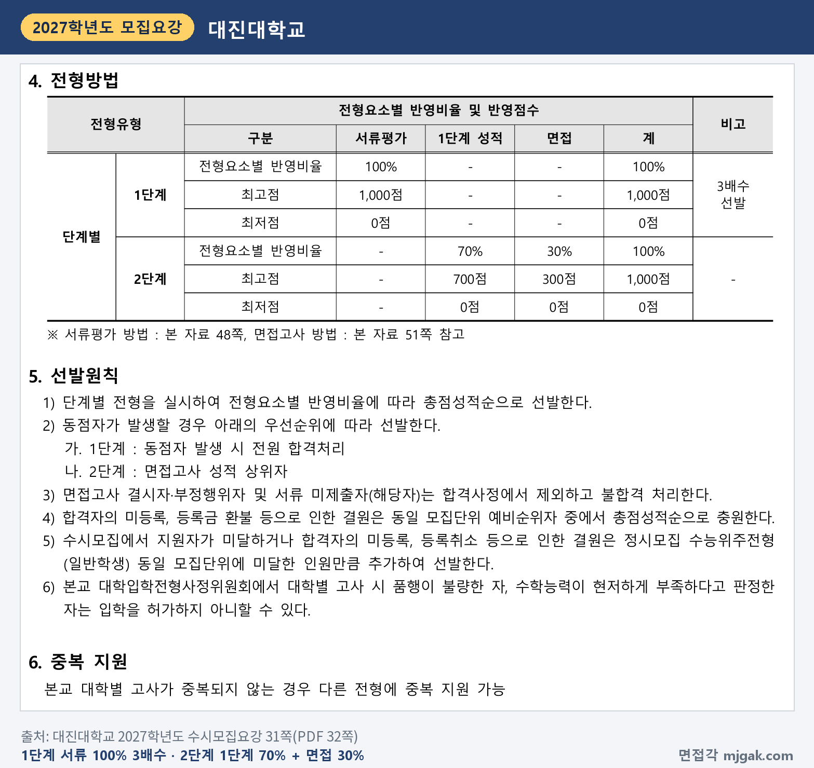
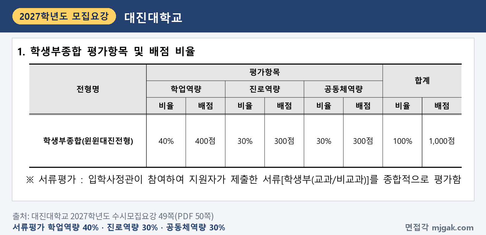
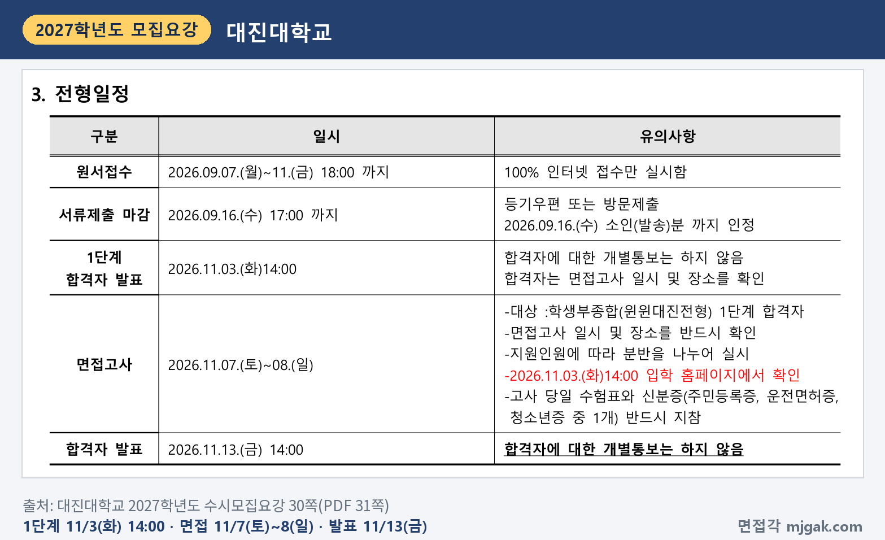
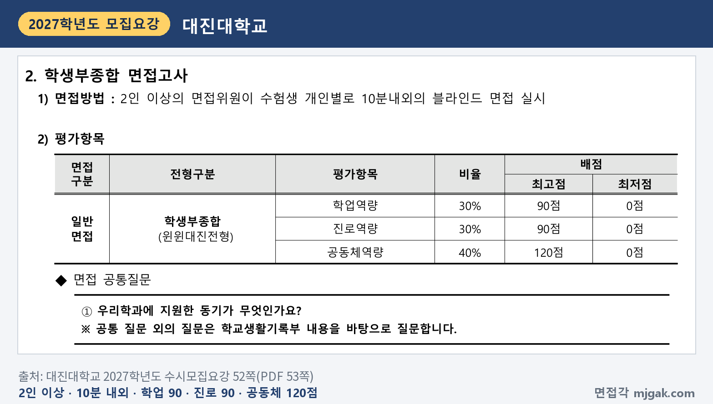
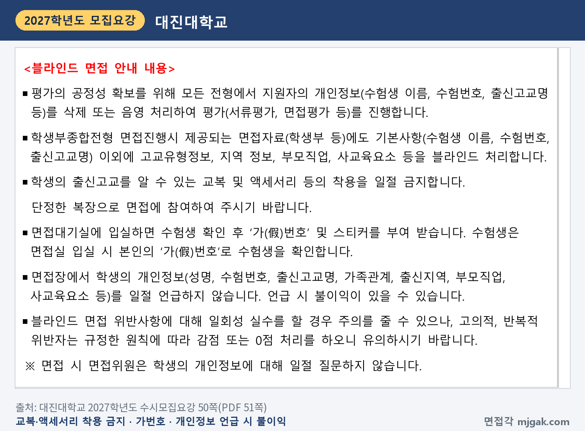
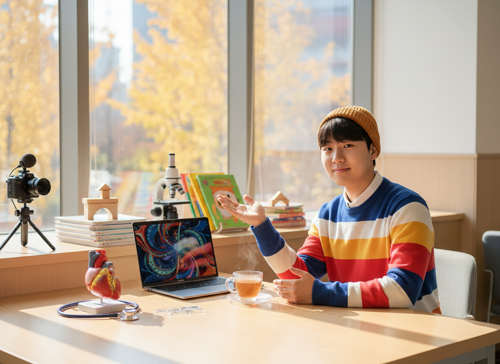
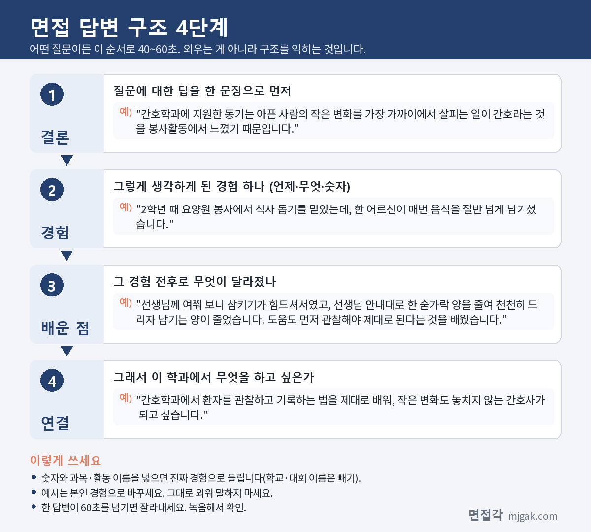
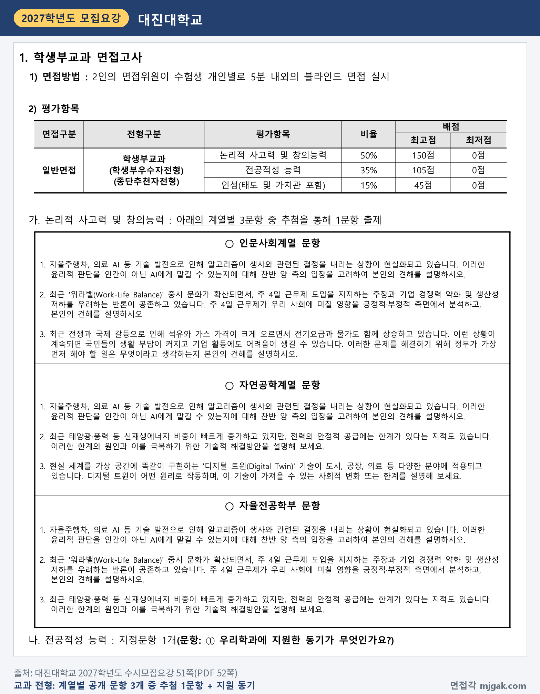
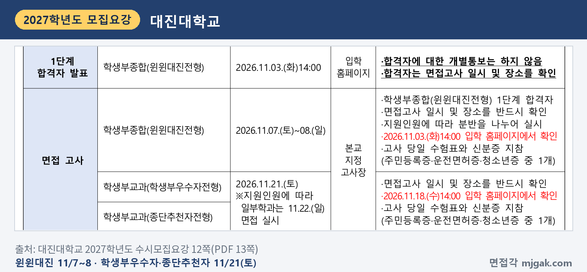
제미나이 프롬프트 1 — 늦가을 캠퍼스 라운지에서 청진기·현미경·노트북·그림책·작은 카메라 옆에서 답하는 학생(실사) (4:3) — 제미나이에 그대로 붙여 넣어 이미지를 만드세요